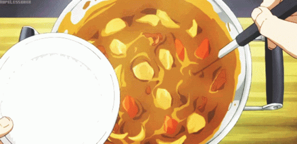
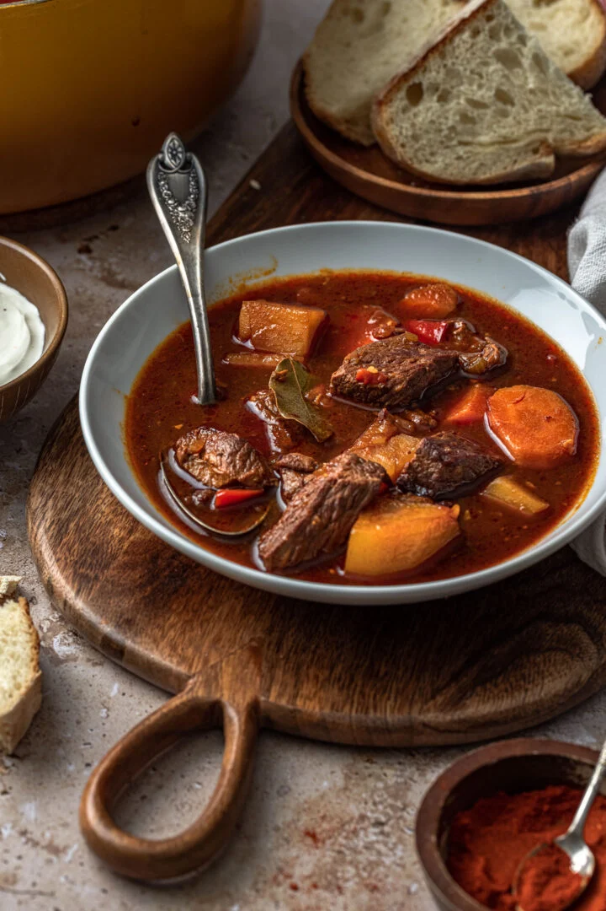

Gulasch Ungherese

Descrizione
Il gulasch è sicuramente uno dei piatti più conosciuti e rappresentativi della gastronomia ungherese, che vanta molte imitazioni sia in Europa che oltreoceano.
La sua fortuna è sicuramente dovuta al fatto che si tratta di un piatto semplice da preparare e molto saporito, grazie soprattutto alla paprika, regina della cucina ungherese in generale e senza la quale il gulasch non sarebbe gulasch!
Ingredienti
- Manzo (sottofesa o cappello del prete o pesce) 1 kg
- Patate 450 g
- Peperoni verdi a cornetto medi 3
- Aglio 1 spicchio
- Semi di cumino (dei prati) 5 g
- Sale fino 10 g
- Brodo di carne 1,5 l
- Cipolle 230 g
- Pomodori ramati (medio) 1
- Paprika dolce in polvere 20 g
- Olio extravergine d'oliva 30 g

Preparazione
- Per preparare il gulash ungherese, per prima cosa preparate circa 1,5 lt di brodo di carne. Poi prendete la carne, eliminate i tessuti connettivi e i filamenti di grasso e tagliatela a fette spesse circa 1,5-2 cm, quindi riducetele a dadini. Mondate e tritate la cipolla finemente.
- Passate al pomodoro: staccate il picciolo, lavatelo e riducete anche questo a piccoli dadini di circa 1 cm. Mondate e schiacciate uno spicchio di aglio. Versate l'olio in una casseruola dai bordi alti, poi unite la cipolla. Fate rosolare bene la cipolla a fuoco medio per circa 10 minuti, mescolando di tanto in tanto per non farla bruciare.
- Una volta che la cipolla sarà appassita, aggiungete la carne nel tegame, mescolate e lasciate rosolare per circa 10 minuti, mescolando spesso perchè la carne non si attacchi. Una volta che la carne sarà ben sigillata e rosolata, potete versare la paprika e i semi di cumino. Mescolate e versate anche l'aglio e i pomodori, poi mescolate ancora per amalgamare il tutto.
- Ora bagnate con il brodo (che avrete precedentemente scaldato) fino a coprire completamente la carne. Coprite con coperchio e lasciate cuocere a fuoco medio per circa 1 ora e mezza, controllando e rimestando di tanto in tanto.
- Nel frattempo pelate le patate e tagliatele a dadini. Lavate e rimuovete il picciolo dai peperoni, eliminate i semini interni e tagliate i peperoni a listarelle di circa 1 cm in senso obliquo. Ora unite sia i peperoni che le patate al gulasch.
- Mescolate, coprite con il coperchio e lasciate cuocere ancora per circa 30 minuti. Una volta pronto, servite il vostro gulasch ungherese ben caldo, magari all'interno di un coccetto!
Indietro alla home